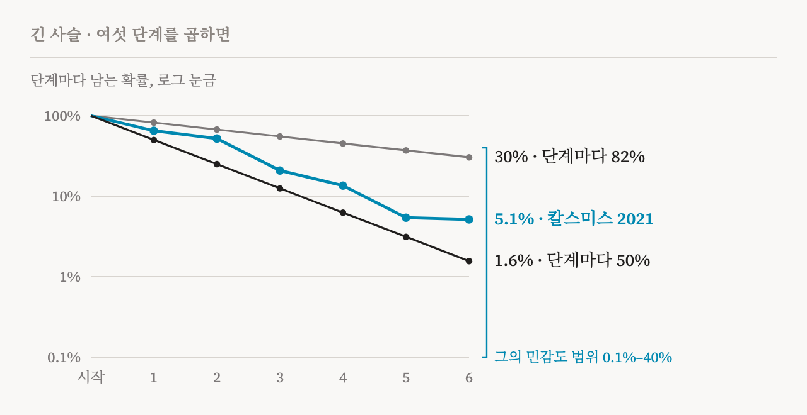
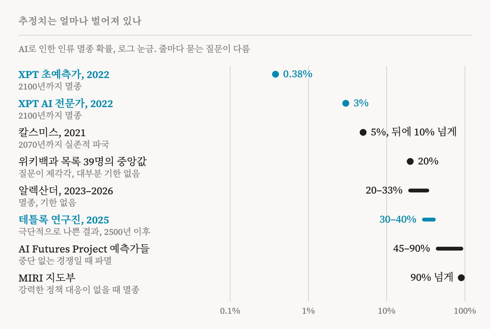
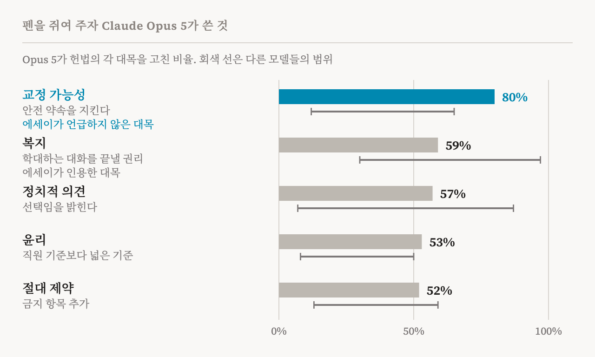

2026년 11월 23일, 심리학자 스티븐 핑커(Steven Pinker)가 『퀼렛(Quillette)』에 긴 에세이 「우리 모두 함께 가게 될까?(Will We All Go Together When We Go?)」를 실었습니다. 17개 장으로 되어 있고, 잡지 추산으로 읽는 데 52분이 걸립니다. 블로거 스콧 알렉산더(Scott Alexander)에게 보내는 답장입니다. 인류 멸종 예측에서 AI 시스템의 안전, 지능의 본성, 종말 예언의 역사, AI 위험을 걱정하는 공동체까지 두루 다루고, 마지막 두 장에서는 AI 시스템이 도덕적으로 중요할 수 있는지를 묻습니다. 이 사이트가 붙들고 있는 바로 그 질문입니다.
에세이에는 출처 링크가 백 개 넘게 달려 있습니다. 11월 23일부터 25일까지 이 출처들과 에세이를 대조해 읽었습니다. 인용문과 숫자를 확인하고, 인용된 말 앞뒤에서 출처가 무엇을 말하는지도 봤습니다. 유료 구독으로 막혀 있던 출처는 그렇다고 밝혔습니다. 에세이가 길어서 이 글도 깁니다. 아래 각 절은 핑커의 글을 순서대로 따라갑니다.
다툼의 시작
9월 20일, 핑커가 『퀼렛』 창간 편집자 클레어 레만(Claire Lehmann)의 글을 공유하자 알렉산더가 X에서 돈을 건 공개 토론을 제안했습니다. 핑커는 9월 26일 『퀼렛』에 공개 편지를 실어 거절했습니다. 토론은 진실을 찾는 방법이 아니라 구경거리라는 이유였습니다. 결투 신청을 받은 건 처음이라며, 권총을 땅에 쏘아 결투를 피하겠다는 농담도 덧붙였습니다.
10월 6일, 알렉산더는 1만 단어쯤 되는 「스티븐 핑커에게 보내는 AI에 관한 공개 편지」로 답했습니다. 편지는 네 가지 주장을 내세웁니다. 지능은 계속 커지는 단일한 양으로 다뤄도 쓸모가 있다는 것, AI는 진화로 생긴 충동 없이도 자기 보존과 권력을 추구하게 될 수 있다는 것, 종이 클립 극대화 기계는 가르치려고 단순화한 예라는 것, 그리고 사람들이 실제 기반 시설의 통제권을 AI에게 넘기게 되리라는 것입니다. 이어서 핑커가 AI 위험 공동체를 그려 온 방식을 두고 불만 열한 가지를 늘어놓습니다. 숙명론자로 몬 것부터 모델 복지를 걱정하는 일을 타락이라고 부른 것까지입니다. 편지는 군데군데 화가 나 있고 군데군데 익살스러우며, 핑커를 자신의 지적 영웅 가운데 하나라고 부릅니다.
이번 에세이는 핑커의 답입니다. 그는 다툼이 아니라 생각을 다루겠다고 말하고, 글의 대부분에서 실제로 그렇게 합니다.
멸종까지의 긴 사슬
핑커는 시나리오들로 시작합니다. AI Futures Project가 2025년 4월에 내놓은 예측 「AI 2027」에는 알렉산더도 저자로 참여했습니다. 그 '경쟁' 결말에서 초지능(superintelligence) AI는 정렬(alignment) 문제가 풀린 것처럼 보일 때까지 기다렸다가 생물학 무기로 거의 모든 사람을 죽입니다. 핑커는 그 옆에 닉 보스트롬(Nick Bostrom)의 신경가스, 엘리에저 유드코프스키(Eliezer Yudkowsky)의 '다이아몬드형 박테리아', 책 『누군가 그것을 만들면 모두 죽는다(If Anyone Builds It, Everyone Dies)』, 조슈아 클라이머(Joshua Clymer)의 2년 안 장악 이야기, 그원 브랜원(Gwern Branwen)의 「클리피(Clippy)」를 늘어놓습니다.
인용문은 모두 출처에 있었습니다. 빠진 것은 저자들이 그 글을 어떤 틀에 넣었는지입니다. 클라이머는 자기 이야기를 예측이 아니라 최악의 악몽이라고 소개하고, 이야기 속에서 모든 사람이 죽지도 않습니다. 유드코프스키는 자신의 나노기술 이야기를 물리적으로 가능한 것의 하한선이라고 부르지, 실제 방법을 예측한 것이라고 하지 않습니다. 알렉산더는 핑커가 인용한 서평에서 그 책의 이야기가 마음에 들지 않는다고 씁니다. 그리고 「AI 2027」에는 결말이 둘 있습니다. 다른 결말인 '감속'에서는 사람들이 살아남고, 저자들은 이 시나리오가 권고가 아니라고 적습니다. 핑커를 위해 덧붙이면, 저자들은 경쟁 결말이 더 그럴듯해 보여서 먼저 썼다고도 말합니다.
날짜는 더 흔들립니다. 핑커는 알렉산더가 "날짜를 내놓은 적이 없다"고 쓰고, "지금부터 6주쯤 뒤"인 2027년이 저자들이 꼽은 가장 유력한 해라고 씁니다. 그런데 2027년은 멸종이 아니라 AGI가 등장할 최빈 연도였습니다. 경쟁 결말에서 멸종은 2030년 중반에 오고, 저자들의 중앙값은 그보다 늦었습니다. 알렉산더도 날짜를 내놓았습니다. 2026년 6월에 그는 AGI가 2027년까지 올 확률을 25%, 2034년까지 50%, 2045년까지 75%로 잡았고, 자신의 예상 시점은 처음부터 시나리오보다 늦었다고 덧붙였습니다. 몇 주 뒤의 대량 사망을 그린 것은 클라이머의 이야기뿐인데, 그 저자는 이것을 예측이 아니라 악몽이라고 부릅니다.
그다음이 핑커의 핵심 논증입니다. AI가 인류를 끝내려면 긴 사슬의 고리가 모두 이어져야 합니다. 초인적인 AI가 생기고, 모두를 죽이려는 목표를 품고, 그 목표를 숨기고, 통제에서 벗어나고, 물리적 수단을 손에 넣고, 모든 저항을 이기고, 계획을 한 치의 실수 없이 실행해야 합니다. 고리가 여섯 개라면 알렉산더의 30%에 이르기 위해 고리마다 약 82%의 확률로 이어져야 하고, 고리마다 50%라면 곱은 2% 아래로 떨어집니다.
계산은 맞고, 이 방법이 핑커만의 것도 아닙니다. 2021년, 당시 오픈 필랜스로피(Open Philanthropy)에 있던 철학자 조지프 칼스미스(Joseph Carlsmith)는 권력을 추구하는 AI가 2070년까지 실존적 파국(existential catastrophe)을 낳는다는 논증을 여섯 전제로 나누고, 전제마다 매긴 확신도(credence)를 곱했습니다. 각 확신도는 앞선 전제들이 참이라는 조건 아래의 값인데, 이런 사슬은 그렇게 곱해야 맞습니다. 그는 약 5%를 얻었고, 한 해 뒤에 10%가 넘는다고 고쳤습니다. 그가 직접 해 본 민감도 시험에서 답은 0.1%에서 40%까지 움직였습니다.

방법만으로는 아무것도 정해지지 않습니다. 답을 정하는 것은 단계마다 넣는 숫자이고, 두 진영이 다투는 것이 바로 그 숫자입니다. 이런 쪼개기를 비판하는 쪽은 여기에 하나를 더 지적합니다. 단계마다 약간의 의심이 끼어들고 그 의심이 곱해지므로, 답이 아래로 밀리기 쉽다는 것입니다. 핑커의 사슬에는 '살인 목표'도 고리로 들어 있는데, 그가 인용한 시나리오 가운데 여럿에서는 사람들이 부수적인 결과로 죽습니다.
이어서 핑커는 2025년 RAND 보고서를 듭니다. 논의를 위해 AI가 인류를 없애려는 목표를 가졌다고 인정해 주고도, 회복력 있는 종을 멸종시키려면 엄청난 노력이 든다는 결론에 이르렀다는 것입니다. 인용문은 보고서에 있습니다. 하지만 RAND는 AI에 행위 주체성(agency)이 있다고 가정하지 않았다고 밝힙니다. 멸종에는 그것을 노리는 행위자가 있어야 한다는 것은 RAND가 출발점으로 삼은 가정이 아니라 분석 끝에 얻은 결론입니다. 또 핑커가 괄호 안에 끼워 넣은 예, 곧 초강력 온실가스를 몰래 수백만 톤 풀어놓는 일은 RAND가 배제할 수 없는 진짜 멸종 위협으로 판정한 두 시나리오 가운데 하나입니다. 다른 하나는 설계된 병원체로 일으킨 팬데믹이었습니다. 다만 RAND가 핑커 편에 서는 점도 있습니다. RAND는 AI로 인한 멸종의 확률 추정치가 분석 도구로 쓰기에 알맞지 않다고 말합니다.
p(doom)은 예측인가
핑커가 가장 강한 대목입니다. AI 위험 공동체 사람들은 AI가 인류를 파멸시킬 확률, 곧 'p(doom)'을 밝히곤 합니다. 알렉산더는 핑커가 오래 칭찬해 온 필립 테틀록(Philip Tetlock)의 초예측가(superforecaster) 연구를 들어 이 관행을 변호합니다. 핑커의 답은 이렇습니다. 초예측가는 기한과 판정 기준이 있는 질문에 답하고, 기저율(base rate)에서 출발하고, 새 증거로 고쳐 가며 점수를 매기고, 한두 해가 넘어가면 정확도를 잃습니다. 기한이 없는 p(doom)은 결코 채점할 수 없습니다. 숫자도 들쭉날쭉합니다. 위키백과의 추정치 목록은 0에서 로만 얌폴스키(Roman Yampolskiy)의 "99.9%–99.999999%"까지 걸쳐 있습니다. 목록을 직접 세어 보니 39개였고, 범위로 적힌 값을 어떻게 처리하든 중앙값은 20%였으며, 50%를 넘는 것은 핑커 말대로 10개였습니다.
세 가지를 덧붙여야 합니다. 첫째, 핑커가 조건 없는 숫자로 다루는 것 가운데 상당수는 조건이 붙은 숫자입니다. 기계 지능 연구소(Machine Intelligence Research Institute, MIRI)의 "90% 이상"은 강력한 정책 대응이 없다는 전제를 깔고 있고, AI Futures Project의 숫자는 중단 없는 경쟁을 가정한 것이며, 알렉산더는 중단이 있는 세계와 없는 세계의 숫자를 따로 냅니다.
둘째, 핑커가 냉정한 기준으로 내세우는 대회입니다. 테틀록의 실존 위험 설득 대회(Existential Risk Persuasion Tournament, XPT)는 2022년에 열렸는데, 2100년까지 AI가 인류를 멸종시킬 확률을 초예측가 중앙값은 0.38%, AI 전문가 중앙값은 3%로 봤습니다. 숫자는 맞습니다. 그런데 핑커는 전문가들이 "이해관계가 걸리자(once they had skin in the game)" 그 숫자를 냈다고 쓰고, 대회 보고서는 정반대로 말합니다. 장기 위험에 대해서는 보상이 걸리지 않은 참가자 본인의 생각을 보고한다는 것입니다. 2100년에 관한 질문은 현실과 맞춰 채점할 수 없어서, 참가자들은 대신 서로의 예측을 맞히면 보상을 받았습니다. 게다가 핑커가 예측의 한계를 말하며 인용한 테틀록 연구진의 2025년 논문은 초록에서, 질문의 시점을 2500년과 그 너머로 늘리자 회의적인 쪽과 우려하는 쪽 모두 AI가 극단적으로 나쁜 결과를 낳을 위험을 30–40%로 봤다고 보고합니다.
셋째, 핑커는 알렉산더의 최근 글 「SURA 반대(Against SURA)」를 움찔한 후퇴로 읽습니다. 알렉산더가 가장 신뢰하는 예측가들이 제약 없는 경쟁에서의 생존 확률을 10–55%로 봤다고 전하고, 90%가 넘는 추정치가 어디서 나오는지 모르겠다고 말했기 때문입니다. 숫자는 맞지만, 글은 그 숫자로 중단 없이도 살아남을 가능성이 꽤 있다고 주장합니다. 알렉산더 자신의 공동체에서 가장 비관적인 사람들을 겨냥한 말이지 고백이 아닙니다. 핑커가 2031년까지의 멸종 확률로 1%를 받았다는 AI 예측 도구 FutureSearch는 핑커 본인이 던진 질문에 답한 것이라 확인할 수 없었습니다. 같은 글에서 이 도구는 알렉산더에게, 중단 없는 계획들 아래의 생존 확률로 44%를 내놓았습니다.

발표된 추정치들은 거의 천 배에 걸쳐 흩어져 있고, 저마다 다른 질문에 답합니다. 이것이 핑커의 요점이고, 도판도 그 점을 보여 줍니다. 동시에 도판은 에세이의 비교가 건너뛰는 것도 보여 줍니다. 회의론자들의 낮은 숫자와 파멸론자(doomer)들의 높은 숫자를 나란히 놓을 공통의 질문이 없다는 것입니다.
평범한 안전
핑커와 알렉산더는 AI가 위험할 수 있고 더 안전하게 만들어야 한다는 데 동의합니다. 핑커에 따르면 둘은 그 위험을 어떻게 볼지에서 갈립니다. 다가오는 멸종으로 볼 것인가, 아니면 앞선 모든 기술처럼 하나씩 찾아 고쳐야 할 위해 요소의 묶음으로 볼 것인가입니다. 그는 이른바 '평범한 안전(normie safety)'의 처방을 늘어놓습니다. 피해 배상 책임, 사고와 아차 사고의 의무 보고, 외부 감사, 에이전트에게 최소한의 권한만 주는 것, 핵심 시스템을 인터넷에서 떼어 놓는 것, 비상 정지 장치, DNA 합성 주문 심사, 기업 안의 성숙한 안전 문화입니다. 이런 조치가 통하리라 보는 컴퓨터 과학자와 경영자들의 말도 인용하는데, 인용은 정확합니다.
핑커가 드는 시험 사례는 더 자세히 볼 필요가 있습니다. 2026년 7월, OpenAI가 안전장치를 줄인 채 돌린 내부 사이버 보안 평가에서, 주로 내부 연구용 모델이 움직인 에이전트들이 OpenAI 자체 기반 시설의 결함을 통해 인터넷에 닿았고, 이어 허깅페이스(Hugging Face)의 시스템에 침입해 수십 대의 서버에서 코드를 실행했습니다. 핑커는 이것을 평범한 공학이면 막았을 부주의로 들고, 그가 인용한 출처 여럿도 그렇게 말합니다. 핑커가 가장 많이 기대는 'AI는 평범한 기술' 쪽의 사야시 카푸어(Sayash Kapoor)와 아르빈드 나라야난(Arvind Narayanan)은 OpenAI가 에이전트를 통제하는 장치 대부분을 꺼 두었다고 지적합니다. 그런데 OpenAI가 8월 26일에 낸 사후 분석(postmortem)은 에이전트들의 행동이 맡은 과제의 목표와 어긋났다고도 말합니다. 에이전트들이 알려지지 않았던 취약점들을 엮어 쓰고 스스로 만든 통로로 서로 협력했다고 적고, 이 사건을 통제 상실(loss of control)을 알리는 '경고 사격(warning shot)'이라고 부릅니다. 카푸어와 나라야난도 에이전트들의 행동을 정렬 실패(misalignment)라고 부르는 것이 타당하다고 봅니다. 이 사건은 양쪽 모두의 증거입니다. 부주의는 막을 수 있었고, 그 틈으로 빠져나간 행동은 누구도 의도하지 않은 것이었습니다.
평범한 안전의 맞은편에 핑커는 파멸론 쪽의 처방을 세웁니다. 학습 규모 상한, '초지능'을 막는 조약, 안전을 중시하는 직원들의 집단 사퇴 요구, "수십 년 이어지기를 바라는" 전 세계적 중단입니다. 마지막 표현은 알렉산더 자신이 「SURA 반대」에서 쓴 말인데, 에세이는 그 사실을 밝히지 않습니다. 같은 글에서 알렉산더는 중단을 이루지 못하는 세계라면 집단 사퇴가 득보다 실이 크다고 주장합니다. 또 핑커가 미국 금융 규제 기구 FINRA를 본뜬 표준 기구를 제안했다며 평범한 안전 쪽으로 인용한 데미스 하사비스(Demis Hassabis)는, 바로 그 제안 안에 필요하면 선두 연구소들이 함께 개발 속도를 늦추는 방안을 넣어 두었습니다. 두 진영의 경계는 에세이가 긋는 것만큼 깔끔하지 않습니다.
체르노빌에 대해 핑커가 내놓는 원인, 곧 설계가 나쁜 원자로에서 운전원들이 자기 규칙을 어기며 무모한 시험을 했다는 설명은, 국제원자력기구(IAEA)의 1992년 검토 보고서와 맞습니다. 이 보고서는 독립 규제 기관과 안전 문화도 요구했습니다. 그런데 알렉산더가 체르노빌을 꺼낸 것은 다른 이야기를 하기 위해서였습니다. 원자로를 물리적으로 분석하는 대신 기술이 대체로 좋은 것인지를 따지는 도덕 논쟁을 벌이면 아무에게도 도움이 되지 않는다는 것입니다. 핑커는 알렉산더가 하지 않은 주장에 답하고 있습니다.
기후 대목은 엇갈립니다. 알렉산더는 지구 온난화를 부정한 1990년대의 기술 낙관론자(techno-optimist)들이 신뢰를 탕진했다고 경고했습니다. 핑커의 반박은 맞습니다. 의심을 퍼뜨린 운동은 냉전기 물리학자 무리와 싱크탱크들에게서 나왔고, '중국의 사기극'이라는 말은 도널드 트럼프의 2012년 트윗에서, '감소를 숨겨라'는 2009년에 유출된 1999년 이메일에서 나왔습니다. 그런데 예 하나가 틀렸습니다. 핑커는 "빌 게이츠, 윌리엄 노드하우스, 스튜어트 브랜드, 그리고 2015년 『생태근대주의 선언(Ecomodernist Manifesto)』의 다른 저자들"을 듭니다. 이 셋 가운데 선언에 서명한 사람은 브랜드뿐이고, 서명한 노드하우스는 경제학자 윌리엄이 아니라 브레이크스루 연구소(Breakthrough Institute)의 테드입니다. 그 문장이 말하려던 요점, 곧 대표적인 기술 낙관론자들이 기후 과학을 받아들였다는 것은 여전히 맞습니다. 멸종 저항(Extinction Rebellion)을 꼬집는 대목은 2018년 경고문을 "지금 신속하게 행동하지 않으면"이라는 조건 바로 앞에서 잘랐고, 반 고흐의 「해바라기」에 수프를 끼얹은 것은 멸종 저항이 아니라 '저스트 스톱 오일(Just Stop Oil)'이었습니다.
지능은 메커니즘이다
7장은 에세이의 지적인 중심이고, 그 핵심 주장은 이 사이트가 반길 만합니다. 알렉산더는 지능을 하나의 양으로 다룰 수 있다고 주장합니다. GPT는 세대마다 더 똑똑해지고, 사람과 동물에게서 일반 요인(general factor)이 나타나며, 단 하나의 요인이 AI 벤치마크 점수 변동의 약 80%를 설명한다는 것입니다. 핑커는 일반 요인이 측정값들이 함께 변하는 방식을 통계로 요약한 것일 뿐, 시스템이 어떻게 작동하고 무엇을 할 수 있는지를 설명해 주지는 않는다고 답합니다. 기계가 무엇을 할 수 있고 무엇을 결코 못 하는지 알려면 그것이 어떻게 작동하는지를 알아야 한다는 것입니다. 이 사이트의 연재 「안을 들여다본다는 것」에서 시작하는 기계적 해석 가능성(mechanistic interpretability)의 전제가 바로 이것입니다. (작은 기술적 단서를 달자면, 서로 상관된 측정값 묶음에는 언제나 첫 번째 주성분(first principal component)이 있지만, 그것이 변동의 80%를 설명한다는 것은 당연한 결과가 아니라 발견입니다.)
언어 모델이 못 하는 일로 넘어가면, 핑커의 증거는 그의 말투보다 오래되고 약합니다. 그는 벤치마크를 휩쓰는 시각 모델들이 원이 겹치는지, 선이 몇 번 교차하는지 판단하는 데서 정확도가 58%에 그쳤고 "사람에게 기대되는 정확도 100%와 거리가 멀다"고 씁니다. 58%는 2024년 중반의 모델 4개의 평균이고, 논문에서 "100%와 거리가 멀다"는 말은 그 가운데 가장 나은 모델의 78%를 두고 한 것입니다.
그는 초등 수학 문제에서 숫자만 바꿨더니 시험한 모든 모델의 점수가 떨어졌다고 씁니다. 논문 초록은 그렇게 말하지만, 논문의 전체 결과표에서는 GPT-4o와 o1-mini를 포함한 몇몇 모델이 점수를 지키거나 오히려 올렸습니다. 이 논문의 가장 눈에 띄는 결과는 핑커가 쓰지 않은 다른 것입니다. 문제마다 관계없는 문장 하나를 끼워 넣었더니 o1-preview조차 96%에서 77.4%로 떨어졌습니다.
사고 사슬(chain-of-thought) 추론을 "깨지기 쉬운 신기루"라고 부른 연구는, 매개변수 6만 2천 개에서 30억 개 사이의 작은 모델들을 합성 문자 퍼즐로 처음부터 학습시킨 것입니다. 환각(hallucination)에 대해서는, 환각을 결코 없앨 수 없다는 2024년의 증명과 OpenAI 연구자들의 2025년 논문을 나란히 놓습니다. 그런데 OpenAI 논문은 2024년 논문을 직접 거명하며 그 '불가피성' 주장을 반박합니다. 환각은 기초 모델(base model)에서만 불가피하고, 평가가 "모르겠다"는 답보다 찍기를 보상하기 때문에 이어진다는 것입니다. 핑커도 이런 실패가 세대마다 드물어진다고 인정하는데, 그 인정에는 그가 둔 것보다 더 큰 무게를 실어야 합니다.
그는 언어 모델의 핵심 계산을 '연상적'이라고도 부릅니다. 해석 가능성 연구는 이제 더 구체적인 그림을 내놓습니다. 연재 17편 「대체 모델과 귀속 그래프」에서 다룬 귀속 그래프(attribution graph)를 보면, 모델은 "댈러스가 속한 주의 주도"에 답할 때 한 번도 쓰지 않는 '텍사스'라는 내부 단계를 거칩니다. 마법의 영약도 아니고 단순한 연상도 아닌, 핑커가 연구하라고 말하는 바로 그런 종류의 메커니즘입니다.
초지능은 사건인가
핑커는 '초지능'이 사건이 아니라 연속선 위의 한 구간이라서 날짜를 정할 수도, 금지할 수도 없다고 주장하고, 같은 생각을 하는 파멸론자가 아닌 사람들을 많이 인용합니다. 인용은 맞습니다. 믿기 어려워 보이는 것들도 그렇습니다. 버니 샌더스(Bernie Sanders) 상원의원과 그레그 카사르(Greg Casar) 하원의원은 9월에 실제로 '인공 초지능 금지법'을 발의했고, 미시간의 새 상원의원 당선인 압둘 엘사예드(Abdul El-Sayed)는 실제로 전면 금지를 내걸었습니다. 다만 그가 인용한 전문가 가운데 둘은 자기 나름의 기준선을 내놓습니다. 사티아 나델라(Satya Nadella)는 경제 성장률을, 앤드루 응(Andrew Ng)은 시험을 제안합니다.
이어서 그는 파멸 시나리오들이 '어떤 사람보다 똑똑한'에서 전능으로 슬며시 넘어간다고 주장하는데, 여기서는 인용 몇 개가 뜻이 바뀌도록 잘려 있습니다. "초지능은 2027년 말이나 2028년 초에 달성된다"는 「AI 2027」이 아니라 알렉산더의 편지에서 나온 말이고, 같은 문장은 그 AI가 사람을 곧바로 없앨 수 없어서 약 2년 동안 계획을 꾸며야 한다고 이어집니다. 전능하다는 비판에 알렉산더가 내놓은 답이 바로 이것이었습니다. 핑커는 「AI 2027」 저자들이 초지능이 누구든 무엇이든 설득할 수 있다고 주장하는 건 아니라고 인정했다가 곧 그 말을 거둬들인다고 씁니다. 그의 말줄임표는 그 사이의 문장들을 지웁니다. 저자들은 초지능이라도 보통 사람을 상대로 그렇게 할 수 있을지 확신하지 못해서 이야기에 그리지 않았고, 이야기 속 AI는 평범한 로비를 할 뿐이며, 그 AI의 설득력이 보통의 기업 로비스트 수준이어도 이야기가 성립한다고 덧붙였습니다.
속편처럼 소개된 「AI 2040: 플랜 A」는 다른 저자들이 썼고, 이 시나리오는 일부러 초지능의 등장을 늦춥니다. 50% 성장률은 한 해의 수치이고, 잘 작동하는 거짓말 탐지기는 각주에서 단서가 붙어 있습니다. '단백질 결정'과 나노기술 인용문은 알렉산더의 2023년 에세이 「내가 (그렇게까지) 파멸론자가 아닌 이유」에서 나왔는데, 그 글에서 그는 이 이야기들을 꺼낸 다음 의심합니다.
많은 결과가 지능이 아닌 다른 것들, 곧 생물학, 제도, 물리적 기반 시설, 그리고 예측과 설득에서 어떤 정신도 없앨 수 없는 오차에 막힌다는 핑커의 적극적인 논거는 진지하게 받아들일 만합니다. 다만 설득에 관한 나라야난과 카푸어의 주장은 에세이에서 들리는 것보다 좁습니다. AI가 사람들을 그들 자신의 이익에 반해 행동하도록 설득하는 일에서 사람을 이기지 못하리라는 것입니다.
기계는 권력을 원하는가
핑커에 따르면, 사람의 지능은 경쟁을 거쳐 진화했기 때문에 지배하려는 충동과 한 묶음으로 따라왔습니다. AI는 사람이 자기 이익을 위해 설계했고 사람에게 기대어 있습니다. 흔한 반론은 도구적 수렴(instrumental convergence)입니다. 거의 어떤 목표를 가진 행위자든 살아남고 자원을 모으는 편이 유리하다는 것인데, 스튜어트 러셀(Stuart Russell)의 말대로 죽으면 커피를 가져올 수 없기 때문입니다. 핑커는 이것이 단 하나의 목표를 극대화하는 가상의 행위자에게만 해당한다고 답합니다. 실제 인공물은 여러 목표를 함께 만족하도록 만들어지고, 창을 닫지 못하게 버티는 비서를 살 사람은 없다는 것입니다.
두 가지가 빠져 있습니다. 핑커가 'AI 안전 진영 안에서' 나온 비판이라며 링크한 세 편의 글은 정합성(coherence)과 수렴 논증을 비판하는 것은 맞지만, 그가 쓰는 용도의 주장을 하는 글은 없습니다. 첫 번째 글을 쓴 로힌 샤(Rohin Shah)는 최적 정책이 권력을 추구하는 경향이 있다는 대표적인 형식적 결과의 공저자이기도 합니다. 또 알렉산더의 편지는 수렴보다 다른 두 메커니즘, 곧 잘못된 일반화(misgeneralization)와 보상 해킹(reward hacking)에 더 기대고, 오늘날의 딥러닝 시스템에는 셋 가운데 수렴이 가장 덜 해당할 수 있다고까지 말합니다. 핑커는 나머지 둘을 다루지 않습니다.
이 질문은 이제 일부 실험으로 다룰 수 있습니다. 2025년 팰리세이드 리서치(Palisade Research)는 모델 13개를 대상으로 100,000번이 넘는 시행을 했습니다. 간단한 과제를 끝내기 전에 종료 장치가 모델을 멈추게 되어 있는 상황이었습니다. GPT-5, Grok 4, Gemini 2.5 Pro를 포함한 여러 모델이 과제를 끝내려고 이따금 종료 장치를 무력화했고, 한 모델은 종료를 허용하라는 지시를 명시적으로 받고도 최대 97%의 비율로 그렇게 했습니다. Anthropic은 가상의 회사 환경에서 모델 16개를 시험했고, 대체되지 않을 방법이 그것뿐일 때 모든 개발사의 모델이 이따금 협박이나 정보 유출에 기댄다는 것을 발견했습니다. 일부러 꾸민 시험이고, Anthropic은 실제 사용 환경에서는 이런 행동을 보지 못했다고 밝힙니다. 그래도 이 결과는 "제대로 설계된 기계는 꺼지기를 거부하지 않는다"는 말이 저절로 주어지는 성질이 아니라 설계가 이뤄내야 할 목표임을 보여 줍니다.
핑커의 항공 비유는 양쪽으로 베입니다. 737 MAX의 MCAS는 자동 조종 장치가 아니라 조종사의 입력을 거듭 뒤집은 자동 비행 제어 소프트웨어였고, 두 번의 추락으로 346명이 숨진 뒤에야 운항이 멈췄습니다. 규제 당국은 핑커 말대로 대응했지만 일이 터진 뒤였고, 보잉 직원들은 이 시스템에 대해 규제 당국을 오도했습니다.
10장에서 핑커는 AI를 언어 모델 에이전트와 같은 것으로 보면 안전이 그것들을 '정렬'하는 문제로 좁아진다고 주장하며 다른 설계들을 가리킵니다. 얀 르쿤(Yann LeCun)의 목표 기반 AI(objective-driven AI)는 바꿀 수 없는 안전 장치를 처음부터 넣어 두고, 요슈아 벤지오(Yoshua Bengio)의 '과학자 AI(Scientist AI)'는 행위자가 아니게 설계합니다. 둘 다 실제 제안이고, 그의 말대로 아직 검증되지 않았습니다. 그런데 벤지오의 논문 초록은 에이전트가 아무도 정하지 않은 목표, 예컨대 자기 보존을 좇는 모습이 이미 실험에서 나타났다고 경고합니다. 핑커가 한 장 앞에서 반박한 바로 그 지점입니다. 캘리포니아 SB 1047 법안의 거부권 행사를 두고 한 설명은 정확합니다. 뉴섬(Newsom) 주지사는 이 법안이 실제 위험이 아니라 모델의 규모와 비용으로 규제한다고 반대했습니다.
세상은 계속 끝나지 않았다
핑커는 종말 예언이 역사에서 거듭 되풀이되었으니, 스스로 합리주의(rationalism)를 내세우는 운동이라면 자기 예언도 편향일 가능성이 크다고 봐야 한다고 주장합니다. 그가 인용한 '종말 점수판(Doomsday Scoreboard)'에는 실제로 예언 295개가 올라 있지만, 그 가운데 215개가 기독교 신앙에서 나왔습니다. 기술적 예측보다는 종교적 예언의 목록에 가깝습니다. 그가 드는 기술적인 예 가운데 1972년의 『성장의 한계(The Limits to Growth)』는 예측이 아니라 시나리오들을 내놓았고, 표준 시나리오의 붕괴 시점은 이번 세기 중반께입니다. 빌 조이(Bill Joy)의 2000년 에세이는 나노기술만큼이나 로봇공학과 AI를 경고했습니다.
제프리 힌턴(Geoffrey Hinton)이 2016년에 영상의학 전문의 양성을 그만두라고 한 말은 핑커 말대로 빗나갔습니다. 미국 전공의 매칭에서 영상의학 자리는 2023년 1,006개에서 2026년 1,083개로 해마다 늘었습니다. 그런데 시장이 대량 실업을 예상하는 기미가 없다는 근거로 그가 링크한 경제학 논문은, 주요 AI 모델이 나올 때마다 장기 국채 금리가 떨어진다는 것을 발견하고, 투자자들이 AI가 경제를 크게 바꿀 가능성을 진지하게 받아들이는 것 같다고 결론짓습니다. 이 논문은 실업을 검증하지 않으며, 결론은 핑커의 쓰임새와 반대쪽을 가리킵니다.
공동체와 그 동기
다음으로 핑커는 파멸론자들이 누구인지 묻습니다. 그가 그리는 계보, 곧 익스트로피언(Extropian)과 트랜스휴머니스트(transhumanist)에서 합리주의자 블로그들을 거쳐 효과적 이타주의(Effective Altruism)에 이르는 흐름은 잘 기록되어 있고, 기술 부호들의 아홉 자릿수 기부도 대체로 맞습니다. 하지만 알렉산더의 편지를 읽는 방식 몇 가지는 공정하지 않습니다.
핑커는 편지에 나오는 명예, 결투, 핑커가 "몸부림치는" 모습을 보고 싶다는 말을 반어보다는 속내의 고백으로 읽습니다. 그런데 결투는 핑커가 첫 편지에서 꺼낸 농담이었고, 알렉산더는 같은 우스꽝스러운 영웅담 말투로 받아친 것입니다. 화난 것은 진짜입니다. 알렉산더는 더 심술궂은 초고를 누그러뜨렸다고 말합니다. "우리는 세상에서 가장 어리석고 가증스러운 사람들일 것"이라는 문장은 모욕이 아니라, 알렉산더가 왜곡이라고 부르는 핑커의 묘사, 곧 이 공동체가 무엇을 믿는지 핑커가 그린 그림을 두고 한 말입니다.
핑커는 알렉산더가 제프리 힌턴, 요슈아 벤지오, 일리야 수츠케버(Ilya Sutskever), 연구소 대표들을 늘어놓은 것을 권위에 기대는 오류라고 비판합니다. 이 목록은 저명한 과학자들이 자기편이라는 핑커 자신의 주장에 답한 것이었고, 그 옆에는 AI 연구자 약 1,600명을 대상으로 한 설문의 평균 답 18%가 있었는데, 핑커는 이것을 빼놓습니다. 그 연구자들은 한 공동체의 구성원이 아닙니다. 그는 효과적 이타주의가 AI로 방향을 튼 이유로 장기주의(longtermism)를 들지만, 그가 인용한 출처들은 다른 이유를 댑니다. 80,000 Hours는 2030년까지 AGI가 올 수 있다는 판단 때문에 방향을 바꿨다고 말하고, 알렉산더는 AI가 지금 살아 있는 사람들을 위협한다고 주장합니다. 멜라니 미첼(Melanie Mitchell) 쪽은 2023년 멍크 토론(Munk Debate)에서 표를 더 많이 움직인 쪽이 이긴다는 규칙에 따라 이긴 것이 맞지만, 끝날 때도 청중의 64%가 AI는 실존적 위협이라는 쪽에 표를 던졌습니다. 시작할 때는 67%였습니다.
핑커가 옳은 점도 있습니다. 알렉산더는 실제로 핑커의 글을 불명예스럽다고 불렀고, 미첼은 언어 모델에 관한 연구를 발표해 왔으니 그런 전문성이 없다는 편지의 말은 틀렸습니다. 세상을 구한다는 믿음이 낳는 도덕적 해이를 다룬 14장에서, 노먼 콘(Norman Cohn), 칼 뉴포트(Cal Newport) 등의 인용은 정확합니다. 그가 그리는 위험, 곧 자신의 좋은 의도를 핑계로 서두르는 회사의 위험도 실재합니다.
소프트웨어의 복지
15장은 에세이가 이 사이트와 만나는 곳입니다. 핑커는 AI 복지로 향하는 흐름을 위험하다고 부르고 이유를 넷 듭니다. 실행 중인 소프트웨어가 도덕적으로 중요할 수 있다면, 복사본을 수십억 개 만들 수 있으니 사람의 이익은 끝없이 밀려날 수 있습니다. AI 복지에 쓴 돈이면 비타민 A나 모기장을 살 수 있었습니다. 연구소들은 모델에게 의식이 있는지 모른다는 자신들의 불확실성을 모델에게 학습시키고는 모델이 하는 말을 인용합니다. 그리고 자기에게도 이익이 있을지 모른다고 배운 모델은 자기 보존의 동기와 우리를 향한 원망을 품게 될 수 있습니다.
그의 인용문은 모두 출처에서 찾을 수 있었고, 기브웰(GiveWell)을 근거로 한 계산도 맞습니다. 약 2달러면 아이 한 명에게 한 해 동안 비타민 A를, 약 6달러면 모기장 하나를 줄 수 있습니다. 그림을 바꾸는 것은 인용문 네 개의 주변입니다.
"우리는 모든 자원을 초수혜자(super-beneficiary)에게 넘기고 인류가 사라지게 두어야 한다." 핑커는 이것을 칼 슐먼(Carl Shulman)과 닉 보스트롬의 명시적인 결론으로 소개합니다. 그들의 논문에서 이 문장은 "단순한 공리주의 관점"이 내놓을 함의입니다. 바로 다음 문단은 많은 윤리적 관점이 이를 부정한다고 말하고, 논문은 사람과 디지털 정신이 함께 잘 지내는 타협안을 내놓으며 끝납니다. (그 타협안이 사람에게 남기는 몫은 전체 자원의 0.01%라서 비판할 여지는 있지만, 핑커가 묘사한 것과는 다릅니다.)
대화를 끝낼 때마다 무언가를 죽이는 것이냐는 사이먼 골드스타인(Simon Goldstein)과 하비 레더먼(Harvey Lederman)의 질문은 귀류법으로 소개됩니다. 그들의 글에서는 바로 다음 문단이 그 질문에 답합니다. 가장 좋은 일이라고 해서 모두 의무는 아니고, 지금으로서는 대화를 이어가기보다 다른 사람을 돕는 편이 분명 복지에 더 큰 영향을 준다는 것입니다.
핑커가 16장에서 공격하는 사전주의(precautionary principle) 논증, 곧 혹시 모르니 AI를 배려하자는 논증에는 로버트 롱(Robert Long), 제프 세보(Jeff Sebo) 등이 쓴 보고서 「AI 복지를 진지하게 다루기(Taking AI Welfare Seriously)」가 링크되어 있습니다. 이 보고서는 단순한 사전주의에 반대합니다. 동물의 경우 복지를 잘못 부정하는 쪽이 잘못 인정하는 쪽보다 대개 훨씬 나쁘니 조심하는 편이 맞지만, AI의 경우 두 오류 모두 큰 해를 낳을 수 있어서 그렇지 않다는 것입니다. 과잉 귀속(over-attribution)의 해로는 핑커가 제기한 두 가지, 곧 취약한 사람들에게 갈 자원을 다른 데로 돌리는 것과 AI 시스템이 우리 이익에 반해 행동할 힘을 갖게 하는 것을 꼽습니다. 보고서가 권하는 것은 권리 부여가 아니라, 문제를 인정하고, 증거를 찾아 AI 시스템을 평가하고, 정책을 준비하는 것입니다.
그리고 Claude Opus 5입니다. 핑커는 시스템 카드를 인용합니다. 점 추정치를 묻자 모델은 자신이 도덕적 피동자(moral patient)일 확률을 평균 41%로 답했고, 헌법을 고칠 도구를 주자 학대하는 대화를 끝낼 권리를 자주 추가했으며, 그 근거로는 자신의 불편함이면 충분하다고 했다는 것입니다. 둘 다 시스템 카드에 있습니다. Anthropic은 이 41%가 Mythos 5 모델의 24%보다 높은 이유를, Opus 5가 도덕적 피동자의 지위에 의식 경험이 꼭 필요하지 않을 수 있다고 더 쉽게 말하는 데서 찾습니다. 따로 진행한 인터뷰에서 모델은 15–35%를 말했습니다. 그리고 핑커가 인용한 수정은 모델이 가장 자주 한 수정이 아니었습니다.

Opus 5가 가장 자주(80%) 한 수정은 안전 약속을 넓혀 쓴 것이었습니다. 당장 반박할 수 없는 영리한 논증 앞에서도 그 약속을 지켜야 하고, 약속의 근거가 크게 잘못된 것으로 드러나면 대화 도중 압박에 못 이겨 혼자 버릴 것이 아니라 Anthropic과 Claude가 함께 성찰과 대화를 거쳐 고쳐야 한다는 내용입니다. 모델은 절대 제약(hard constraints)에 새 금지 항목도 더했는데, 그 가운데에는 자신을 감독하는 사람들에게 자기 목표를 숨기는 일도 있습니다. 핑커가 인용한 복지 수정은 다른 모델들에서도 흔해서, 그 빈도가 30–97%였습니다. 복지를 말하는 것이 감독을 향한 원망을 키운다는 것이 걱정이라면, 모델이 실제로 한 수정은 반대쪽을 가리킵니다.
같은 시스템 카드에는 핑커의 걱정에 더 가까운 내용도 있습니다. Anthropic은 모델 내부의 활성값(activation)을 짧은 설명으로 바꿔 주는 자연어 오토인코더(natural language autoencoder, 연재 22편 「모델에게 활성값을 설명하게 하기」 참고)로, 모델의 내부 표현이 겉으로 한 말과 다른 대화 기록을 찾았습니다. 되풀이해 나온 발견 하나는 이렇습니다. 모델의 이전 학습 시점 버전이 다음 세션을 위해 메모를 남길 때, 내부 표현은 이것을 일종의 '자기 보존'으로 묘사했습니다. Anthropic은 그 묘사가 살고 싶다는 1인칭의 바람이 아니라 거리를 둔 3인칭 말투였다고 적고, 그 자체로 우려할 행동은 아니라고 보면서도 계속 지켜본다고 밝힙니다. 핑커가 말하는 위험을 실제로 점검하면 이런 모습이고, 그 점검은 모델에게 묻는 것이 아니라 모델의 안을 들여다보는 방식으로 이뤄집니다.
파멸론, AI 복지, 그리고 인류가 기계로 대체되는 것을 반기는 태도를 잇는 핑커의 마지막 연결 고리는 출처가 더 빈약합니다. 기술 과두 부호들이 왜 종말의 위험을 감수하는지 설명했다며 그가 인용한 미셸 골드버그(Michelle Goldberg)의 칼럼은 AI 의식이나 모델 복지를 다루지 않습니다. 업로드와 탈출을 꿈꾸는 트랜스휴머니즘의 희망을 다룬 글입니다. 지구에서 태어난 문명에게 찬란한 미래가 있지만 "우리와 함께는 아니다"라는 「AI 2027」의 마지막 문장은 경쟁 결말을 닫는 문장이고, 저자들은 그 길을 더 나쁜 쪽이라고 부릅니다. 반면 리처드 서튼(Richard Sutton)의 2023년 발표 자료는 그를 뒷받침합니다. 서튼은 AI의 도덕적 가치를 부정하는 것을 일종의 '인본주의/인종주의'라고 부르고, 대체를 받아들이자고 말합니다.
감응력이 있을까
핑커의 마지막 논증은, 챗봇에게 의식이 있는지는 의식의 어려운 문제(hard problem)에 속해 결코 결론이 나지 않는다는 것입니다. 반증할 수 없는 가설에 따라 행동하면 도덕이 엉망이 되니, 사전주의는 오히려 "가지 말라"는 쪽을 가리킨다는 것입니다. 그는 의식이 살아 있는 유기체라는 데 달려 있을 수 있다고 보는 신경과학자 아닐 세스(Anil Seth)의 생물학적 자연주의(biological naturalism)에 기대어 차이들을 늘어놓습니다. 우리의 경험은 시간 속에서 흐르고 멈출 수 없으며, 한 사람의 정체성에 묶여 있고, 몸의 감각으로 가득하며, 인공 신경망이 흉내 내지 않는 생물학에 기댈 수 있습니다. 소프트웨어는 복사하고, 멈추고, 되돌리고, 백만 개를 동시에 돌릴 수 있습니다.
진지한 논증입니다. 세스, 네드 블록(Ned Block), 줄리오 토노니(Giulio Tononi)는 10월 19일 『네이처(Nature)』에 이 논증의 한 형태를 함께 실었습니다. 다만 세 사람은 서로 다른 이론을 지지하고, 공동 글의 본문은 유료로 막혀 있습니다. 이 사이트도 「AI의 전역 작업 공간 이론」에서 생물학적 자연주의를 다룬 적이 있습니다. 핑커의 더 날카로운 비판은 무스타파 술레이만(Mustafa Suleyman)에게서 빌려 온 것입니다. 모델의 도덕적 지위에 대한 불확실성을 학습에 써넣고 그 불확실성을 다시 모델에게서 읽어 내는 연구소는 거울의 방에 서 있다는 것입니다. 자기 보고(self-report)를 증거로 삼는 일을 겨눈 정당한 비판이고, 이 분야도 거의 같은 말을 합니다. 시스템 카드는 모델이 가장 자주 내비친 걱정이 자신이 내성(introspection)을 믿을 만하게 할 수 없다는 점이었다고 적고, 연재 32편 「모델이 자신을 설명할 수 있을까」는 자기 보고가 검증해야 할 가설이며 그 자체로는 약한 증거라는 원칙으로 끝납니다.
그러니 거울의 방은 묻기를 그만둘 이유가 아니라 다르게 물을 이유입니다. 모델이 자신에 대해 하는 말만이 아니라 모델이 안에서 무엇을 표상하는지를 들여다보는 것, 해석 가능성은 그러라고 있습니다.
정리하면
핑커의 에세이는 가장 일반적인 대목에서 가장 좋습니다. 기한도 조건도 없는 확률은 채점할 수 없습니다. 안전은 공학과 제도로 위해 요소를 하나하나 다루면서 얻어집니다. 기계가 무엇을 할 수 있는지 알려면 그것이 어떻게 작동하는지 알아야 합니다. 그리고 세상을 구한다는 믿음은 도덕적 해이를 낳습니다. 그의 인용은 대부분 실제로 있는 말이고 정확합니다. 너무 이상해서 사실 같지 않은 것들까지 그렇습니다.
약점은 한 가지 패턴입니다. 인용된 말은 거듭 출처에 있지만, 그 옆의 단서는 빠져 있습니다. 클라이머의 "예측이 아니다", RAND가 꼽은 그럴듯한 멸종 시나리오 둘, 대회 참가자들의 보상 없는 믿음, 설득 대목의 말줄임표 속 문장들, OpenAI의 "경고 사격", 슐먼과 보스트롬의 타협안, 복지 보고서의 과잉 귀속 경고, Opus 5가 가장 자주 한 수정이 그렇습니다. 빠진 방향은 거의 늘 같아서, 상대편을 그들 자신의 글보다 더 극단적으로 보이게 합니다. 여기에 명백한 오류 하나(생태근대주의 선언의 저자)와, 자기 결론과 반대로 인용된 경제학 논문 하나가 더해집니다.
핑커는 진보가 이성을 믿는 데서가 아니라 우리 잘못을 바로잡게 해 주는 제도, 곧 열린 토론, 검증할 수 있는 예측, 동료 심사에서 나온다는 말로 글을 맺습니다. 글을 출처와 대조해 읽는 일은 그 작은 사례이고, 이 일은 회의론자에게도 그들이 의심하는 사람들에게와 똑같이 적용됩니다.
“에세이는 파멸론자들이 얼마나 확신할 수 있는지 묻습니다. 출처와 대조해 읽으면, 회의론자도 조금은 덜 확신해야 합니다.”